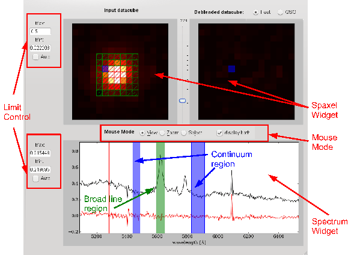

Next: Mouse Modes
Up: The Graphical User Interface
Previous: Help Menu
The Cube Viewer Widget on the right part of the main window consists of several widgets itself as shown in Figure 8. The Spectral Widget on the bottom displays the spectra of individual spaxels or a sum of selected spaxels. Two different Spaxel Widgets visualise the light distribution at a given wavelength for the initial datacube (left) and the QSO or host datacube (right) after the deblending process was completed. One can browse through the spatial or spectral dimension or select specific feature with the mouse depending on the Mouse Mode.
Figure 7:
The Cube Viewer Widget
|

|
Subsections
Bernd Husemann
2011-04-07